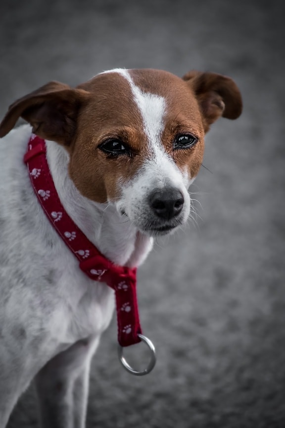
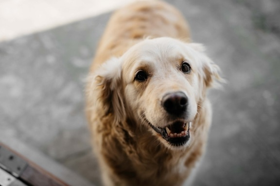

Algunas de nuestras historias
Gaucho
Gaucho fue encontrado en la puerta de una parrilla. Ya estaba inválido y en un estado desesperante. Lo más increíble es, viendo cómo estaba, que nadie se acercara a ayudarlo. Sólo recibía algún que otro hueso de vez en cuando. Así llegaba al refugio nuestro adorado Gaucho. Quienes lo conocen saben que tiene una figura imponente, como un oso polar en miniatura, y un ladrido que nos deja mudos. Pero lo que más amamos de Gaucho es su personalidad dulce y cariñosa, siempre buscando un mimo. Ver a Gaucho, nuestro viejito, tan animado y con tantas ganas de vivir, nos hace ver, una y otra vez, cuán necesarias son las segundas oportunidades, no?

Vicente
Cuando Vicente llegó al refugio, su cuerpito cansado y dolorido nos decía todo… Tenía una expresión de derrota que nos heló la sangre. Completamente lastimado, con heridas ya cicatrizadas y abiertas, piel y huesos, pelado y ciego ya que le habían lastimado ambas corneas de manera intencional. Realmente nos cuesta entender quién puede causarle semejante dolor a un animal y luego abandonarlo a su suerte, pero tampoco entendemos como todas aquellas personas que pasaron por su lado, durante todo ese tiempo, no se dignaron a hacer nada por él. ¿Cómo se puede ser tan indiferente? Vicente era apenas un cachorro, casi no llegaba al año de edad. No sabíamos qué iba a pasar con él. Casi no se movía, estaba apático, no reaccionaba y ni siquiera levantaba la cabeza. Pero el caso de Vicente es uno de esos casos en los que el amor y la esperanza pueden más. Poco a poco, fue recobrando fuerzas y esa cabecita, tan gacha y triste, fue levantándose. También empezó a olvidar tanto tiempo de dolor, un dolor que iba más allá de su cuerpo. Y fue así como Vicente se convirtió en un verdadero príncipe y cerró su círculo.
Oro
Oro fue rescatado cuando estaba vagando por los alrededores de la autopista camino a Pilar. Las zonas del cuello y de la oreja estaban completamente agusanadas. No podemos ni comenzar a imaginarnos el dolor que seguramente estaba sintiendo en ese momento. Pero después de muchos cuidados, mucha paciencia y, más que nada, toneladas de amor, Oro fue recuperándose hasta llegar a convertirse en un perro bellísimo y fuerte. Hoy, después de tanto dolor, Oro duerme feliz en el calor de un hogar y rodeado de una familia que lo ama como se merece y que no dudó en devolverle la dignidad que jamás debió haber perdido
